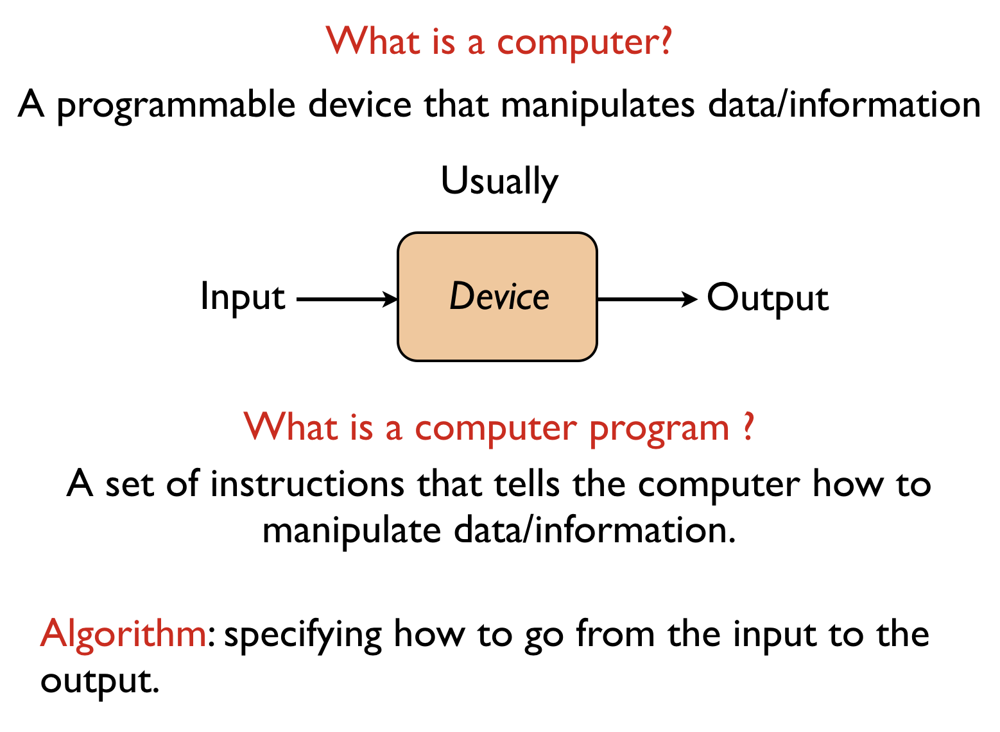
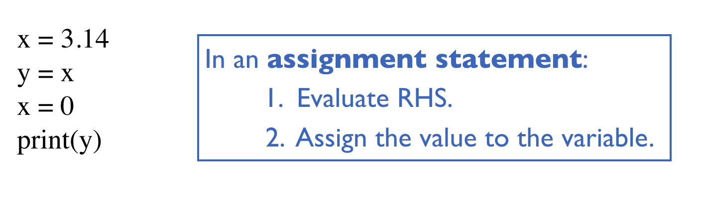

- Installing and running Python
- Some fundamental definitions
- Basic building blocks of programming
- Types of programming errors
Installing and running Python
Note: Your TA's will be happy to help with any of these steps!
- Install Python3
Download and install Python 3.5.x from python.org's download page. - Run IDLE (the default Python text editor / IDE)
Since IDLE is available without extra installs in nearly all Python installations (including the cluster machines at CMU), you should also know about and be able to use IDLE. In most cases, you can type IDLE into your Mac or Windows search and it will find and run it. However, we require that everyone uses Pyzo (former IEP) for the first 2 weeks of the course. The instructions to insall and get Pyzo running are below. - Run Pyzo (formerly "IEP")
Pyzo is a new Python IDE that is easy to setup and use. It has some nice features that IDLE does not, such as line numbers (which are a big deal, actually), an 80-character line (very handy), and so on. Everyone in 15-112 will use Pyzo at least for the first 1 weeks of the semester. To install pyzo:- Download and install Pyzo from the appropriate link:
- Pyzo for Windows
- Pyzo for OS X
Note: drag the icon to your Applications folder. You may also need to control-click to Open the first time only, to approve launching this downloaded app. - Pyzo for Linux
- Launch Pyzo.
- Setup your shell configuration for Python 3
- On the top menu, click Shell->Edit Shell Configurations
- Click the dropdown labeled exe, and choose Python 3.5.
- Under "gui", select "None no gui support" (otherwise you may have problems when we do graphics).
- Press done.
- Restart Pyzo and you're ready to go!
- Go to http://retinizer.mikelpr.com/, and download the app 'Retinizer'.
- Install 'Retinizer'. (It is from the Apple Store, so in order to open it, you may first either control-click on it and select "Open", or go to 'System Preference', 'Security & Privacy', 'General' and 'Allow apps download from', 'Anywhere'.)
- Open 'Retinizer', drag pyzo from your 'Applications' folder to 'Retinizer', press Retinize!
- Reopen pyzo and the resolution should be adjusted to fit a Retina display!
- Close the extra frames (file browser, etc), only use editor frame (on top, where it is by default) and shell frame (which you should drag to the bottom), so it mirrors IDLE's simple setup.
- Relaunch Pyzo, for a simple Python3 test, use this program: print(5/3), then choose Run File as Script or Execute File from the Run menu. You should not get 1 (which you would get if you are using Python2) but instead should get 1.666666667.
- Download and install Pyzo from the appropriate link:
- Edit your Python file
In Pyzo, you need to open a Python file or create a new Python file, which then places you in the editing window. That is where you write your code. Be sure to save your code in a file ending in .py (like: foo.py) before running it! - Run your code
Each IDE has its own way to run code. In Pyzo, from the "Run" menu, select "Run file as script". This loads and runs your code in the Python Shell (the interpreter that runs Python code, instead of editing it).- There are several options on the Run menu. Be sure to use the first one, "Run file as script".
- Some students reported an error where Pyzo could not find files that are imported from the same folder as the main file. In these cases, this was remedied (if not outright fixed) by going into Shell/Edit-Shell-Configurations and setting the startDir field either to "." (just a dot, no quotes) or, in some cases, to the full path where your main file is.
Some fundamental definitions

Basic building blocks of programming
In this section, we'll give a taste of what the basic building blocks of programming are and how they look like in the Python programming language. It is completely ok (and expected) that you don't understand some of the details. We will discuss these in much more depth as we progress in the course.Variables
The most basic thing one can do with data is store it. Variables allow you to store data and access data that has already been stored. For example:x = 5 y = 3 print(x) # prints 5 print(y) # prints 3
Here, we are first storing the value 5 (somewhere in memory). You should think of the variable x as a reference to that piece of data in memory. In the second line, we are storing the value 3 in memory, and making the variable y a reference to that value. In the third line, the variable name is used to access the data that it refers to. So this line prints on the screen 5. Similarly, the fourth line prints on the screen 3.
Statements
A statement is an instruction that tells the computer to do something. Example:x = 5
This is called an assignment statement. It tells the computer to assign the value 5 to the variable named x. Another example is the print statement (changed to a function in Python 3):

print("Hello world!")
This tells the computer to print on the console the text "Hello world!". You can give print() more than one input.
print("Hi", "hello") # prints Hi hello
print("Hi", 1, 2, 3) # prints Hi 1 2 3
Note that anything after a # symbol is ignored by the computer, and is called a comment. We use comments to explain what the code does.
Data types
Computation is all about manipulation of data. In programming, data is often divided according to their type. For example, an integer and a piece of text are two different types of data. Here are a few very commonly used types:| Python name | Description | Values |
|---|---|---|
| int (integer) | integer values | e.g. -100, 0, 123456789 |
| float | fractional values | e.g. 3.14 |
| str (string) | text | e.g. "Hello world", "3.14" |
| bool (boolean) | Boolean values | True, False |
| NoneType | absence of value | None |
Operators
Operators allow us to manipulate data in order to produce new data. As a simple example, consider:print(3 + 5) # prints 8 print(3 * 5) # prints 15 print(1 + 1 * 2) # prints 3 (* takes precedence over +) print((1 + 1) * 2) # prints 4 (parentheses evaluated first)
Above, + and * are the operators, and they work as you would expect them to work. Data types matter because what an operator does depends on the types of data it is acting on.
print("Hello" + "World") # prints HelloWorld
print("1 + 2") # prints 1 + 2 (does not print 3)
print(1.5 + 1.5) # prints 3.0 (does not print 3)
print("Hi" * 2) # prints HiHi
print(1 + "Hi") # crashes: cannot add an integer and a string
Here are some other examples of operators:
print(2**3) # prints 8 (same as 2 to the power 3) print(8 % 3) # prints 2 (same as 8 mod 3, the remainder when 8 is divided by 3) print(8 / 3) # prints 2.6666666666666665 print(8 // 3) # prints 2 (this is called integer division (or floor division))
Operators work with variables as well:
x = 5 + 2 x = x + 1 print(x) # prints 8 print(x * 2) # prints 16
A valid combination of data, variable names and operators is called an expression. In an assignment statement, the right-hand-side of the equality is an expression. In a print statement/function, the portion inside the parantheses is an expression. To carry out these statements, the computer first evaluates the expression to a value.
Here are some examples of operators that produce boolean values.
x = 10 print(x > 11) # prints False print((x > 0) and (x <= 10)) # prints True
Operator Order (Precedence and Associativity):
print("Precedence:")
print(2+3*4) # prints 14, not 20
print(5+4%3) # prints 6, not 0 (% has same precedence as *, /, and //)
print(2**3*4) # prints 32, not 4096 (** has higher precedence than *, /, //, and %)
print()
print("Associativity:")
print(5-4-3) # prints -2, not 4 (- associates left-to-right)
print(4**3**2) # prints 262144, not 4096 (** associates right-to-left)
Functions
Functions are the main way we structure our programs. Each function takes a number of inputs, and produces (returns) a desired output. In order to use (call) a function, we first have to define it. Here are the building blocks of a functions:
Now see the examples below to get a sense of how functions work.
Defining and calling functions
# The following is a function definition.
# Note that the body of the function must be indented.
def square(x):
y = x*x
return y
# The function definition is not used until you call the function.
print(square(5)) # prints 25
# Other ways to write the square function
def square(x):
return x*x
def square(x):
return x**2
Return statements
# Basic example
def square(x):
y = x*x
return y
print(square(5)) # prints 25
print(square(10)) # prints 100
# Return ends the function immediately
def square(x):
print("x equals ", x) # runs
y = x*x
return y
print("y equals ", y) # does not run ("dead code")
print(square(10)) # prints x equals 10, then 100
# No return statement -> returns None
def square(x):
y = x*x
print(square(10)) # prints None
Print vs. Return
# This is a common early mistake (confusing print and return):
def cubed(x):
print(x**3) # Here is the error!
cubed(2) # seems to work!
print(cubed(3)) # sort of works (but prints None, which is weird)
print(2*cubed(4)) # Error!
# Once again (correctly)
def cubed(x):
return (x**3) # That's better!
cubed(2) # seems to be ignored (why?)
print(cubed(3)) # works!
print(2*cubed(4)) # works!
Different Parameter and Return Types
def hypotenuse(a, b):
return ((a**2) + (b**2))**0.5
print(hypotenuse(3, 4)) # 5.0 (not 5)
print("---------------------")
def isPositive(n):
return (n > 0)
print(isPositive(10)) # True
print(isPositive(-1.234)) # False
There are various built-in functions that you can directly use. Here are a few examples.
print(round(0.55)) # prints 1 print(round(-3.14)) # prints -3 print(max(2,3)) # prints 3 print(min(2,3)) # prints 2 print(pow(2,3)) # prints 8 (same as 2**3)
Conditional statements
Conditional statements allow us to execute a sequence of instructions only when a certain condition is satisfied. Example:
def absoluteValue(n):
if (n < 0):
n = -n
return n
print(absoluteValue(-5)) # prints 5
print(absoluteValue(3)) # prints 3
In the if statement, the portion inside the parentheses is an expression that is supposed to evaluate to True or False. If it evaluates to True, the body of the if statement (line 3 in the example above) is executed. If the it evalutes to False, the body of the if statement is skipped. (In general, the body can have multiple lines.) We will explore conditional statements in much more depth in the next lecture.
Loops
Loops allow us to execute a sequence of instructions multiple times. There are two kinds of loops: for loops and while loops.
# The following prints Hello! 10 times
for i in range(10):
print("Hello!")
# Here is the same thing using a while loop
i = 0
while (i < 10):
print("Hello!")
i = i+1
We will explore loops in much more depth in a few lectures.
Types of programming errors
Programming errors are called bugs. The process of removing bugs is called debugging. There are 3 types of programming errors, as described below.Syntax errors (compile-time errors)
You have to follow the syntax rules of the language very closely. If you, for example, misspell a word or don't indent things properly, you'll get a syntax error. In this case, the program won't even run.
# Python language is case-sensitive
Print("Hello") # Error: name Print is not defined
for i in range(10):
print(i) # Error: expected an indented block
Run-time errors
A run-time error is an error that happens as your code is being executed. When this kind of error happens, the program crashes, meaning the program is terminated at that point.
x = 10
x = x // 15 # x is now equal to 0
print(1/x) # Crash: cannot divide by 0
print("This line won't get printed.")
Logical errors
A logical error happens when your program runs without any syntax or run-time errors, but gives you the wrong answer at the end. This means that the logic behind your code is not correct and needs to be fixed. For example, using a wrong formula to compute a value would be a logical error.
def degreesInCelsius(fahrenheit):
celsius = fahrenheit*(5/9) - 32 # Wrong formula
return celsius
print(degreesInCelsius(80)) # Prints a wrong answer